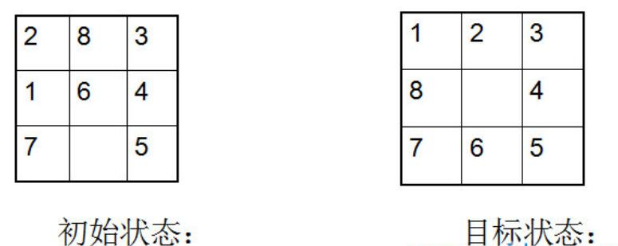

简介
对于n*n的拼图游戏随机产生的结果是否可行进行讨论。当然可以采用搜索算法来尝试求解，但对于只想知道可解性未免太过麻烦。
这里将八数码问题推广为n数码问题来解决该问题。
八数码问题
问题描述
在一个3*3的方棋盘上放置着1,2,3,4,5,6,7,8八个数码,每个数码占一格,且有一个空格。这些数码可以在棋盘上移动，其移动规则是：与空格相邻的数码方格可以移入空格。现在的问题是：对于指定的初始棋局和目标棋局，给出数码的移动序列。该问题称八数码难题或者重排九宫问题。

一个简洁的结论
为方便计算，将二维转化成一维。
如：1 2 3 4 5 6 7 8 X （X为空格）
而对于八数码问题的结论：
一个状态表示成一维的形式，求出除X（空格）之外所有数字的逆序数之和，也就是每个数字前面比它大的数字的个数的和，称为这个状态的逆序。
若两个状态的逆序奇偶性相同，则可相互到达，否则不可相互到达。
由于原始状态的逆序为0（偶数），则逆序为偶数的状态有解。
也就是说，逆序的奇偶性将所有状态划成了两个等价类，同一个等价类中的可以互相到达。
简要的说明
由于X并不参与逆序的计算，当X左右移动时，逆序不变。
上下移动空格时，相当于将另一个数字向后（前）移动两格，跳过两个数字要么都比它大（小），逆序可能±2；要么一个较大一个较小，逆序不变。
所以，两个互相可以到达的两个状态，它们的奇偶性相同。
关于逆序的计算
逆序和可以暴力一点来算，另外在《算法导论》的习题2-4有提到可以递归解决。
在Github上的calInversion模块有写。
对奇数的推广
由上面的简要说明可以发现，对于奇数的推广是很显然的。
对偶数的推广
注意到，在n为偶数时，空格的上下移动会导致逆序的奇偶性发生变化，每一次移动会导致奇偶性翻转一次。
那么我们就把这个翻转记录下来，记录下空格距离初始位置移动的距离并判断奇偶性。
以下是判断代码的摘录：
八数码问题与拼图游戏
对于n*n的拼图游戏，等同于n数码问题。
在判断其可解性的过程中，可以直接将八数码的思路拿过来。只要在拼图游戏中，有一个一维或者二维数组和Button组相对应，将该数组进行上述处理即可。
拼图游戏已经实现的源代码：Github:https://github.com/dreamgod2016/puzzle